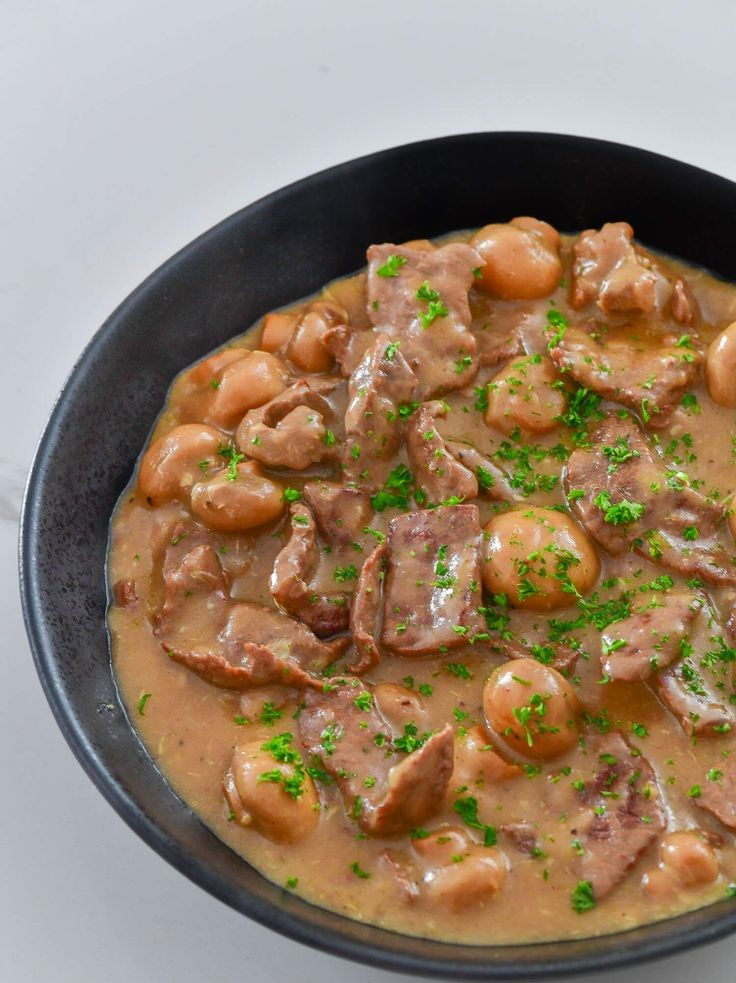

Creamy Beef With Mushroom Recipe
What is Creamy Beef With Mushroom?
The combination of tender meat and smoky, umami mushrooms has been around since time immemorial. Whether you're using pork, chicken, or beef, this dynamic duo has given life to so many of our favorite dishes. One of these is the delectable and mouthwatering burger steak, which combines your favorite thick burger patties with copious amounts of flavorful gravy. Burger steaks have become so popular, they're even a beloved fast food offering! Because we know that beef works so well with mushrooms, why not, then, take it up a notch? Introducing now: the delightful and delicious creamy beef with mushroom!
Ingredients
2 lbs. beef sirloin
8 ounces button mushrooms
62 grams Knorr Cream of Mushroom Soup
1 head garlic
1 onion
2 cups water
3 tablespoons butter
1 tablespoon cooking oil
1 tablespoon parsley
Salt and ground black pepper to taste
Instructions / How to Cook
1. Melt butter in a pan. Add cooking oil.
2. Sauté garlic until it browns. Add onion and cook until it softens.
3. Add the beef. Cook while stirring until the sides turn brown.
4. Pour 1 cup water. Cover the pan. Adjust to a simmer and continue cooking for 35 minutes.
5. Add button mushrooms. Stir.
6. Combine 1 cup water and Knorr Cream of Mushroom in a bowl. Mix well.
7. Pour the mixture into the pan. Let it boil. Continue cooking uncovered for 10 to 15 minutes using low heat setting.
8. Season with salt and ground black pepper.
9. Top with parsley. Serve warm with rice.
10. Share and enjoy!